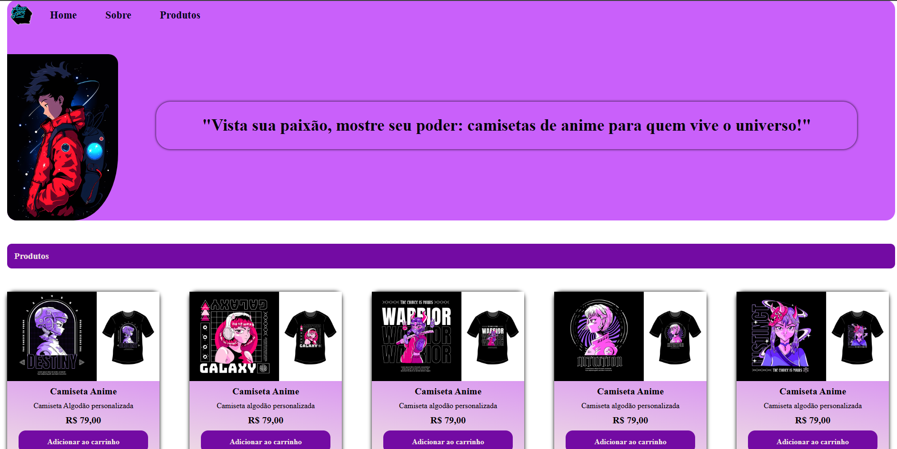

Roni Júnior
Sobre Mim
Sou apaixonado por tecnologia e desenvolvimento de software. Trabalho com Back-End, focando em soluções eficientes utilizando Node.JS com Express.JS.
Atuo no tratamento de páginas Front-End com HTML5 e CSS3, realizando ajustes para páginas interativas com JavaScript.
Todos os dias, atualizo meu portfólio e GitHub com projetos nos quais tenho trabalhado ou que estou estudando no momento.
Baixar Currículo
Dev_Xavier Projects
Bem-Vindo ao Meu Portfólio
Explore minha coleção de projetos em JavaScript, HTML e CSS e veja no que tenho trabalhado!
Projetos Com HTML e CSS
Projeto 1: Landing Page Coca-Cola
Este projeto foi desenvolvido utilizando HTML e CSS, com o objetivo de proporcionar uma experiência prática e aprofundada no uso dessas duas linguagens essenciais para a construção de páginas web. Através desse projeto, busca-se não apenas aprimorar as habilidades técnicas necessárias para estruturar e estilizar páginas, mas também aumentar a confiança do desenvolvedor ao trabalhar com código HTML e CSS, oferecendo uma base sólida para projetos futuros e garantindo maior segurança e eficácia ao manipular essas tecnologias.
 "GitHub Code"
"GitHub Code"
Projeto 2: Dev Form
O Dev Form foi um dos primeiros projetos que criei quando comecei meus estudos no mundo da programação, e ele marcou o início da minha jornada de aprendizado. Foi uma experiência enriquecedora, onde pude aplicar os conceitos que estava absorvendo, principalmente nas linguagens HTML e CSS pela Plataforma da One Bit Code. Esse projeto me proporcionou uma compreensão mais profunda sobre a construção de interfaces web e a importância do design responsivo, além de me permitir praticar o uso de elementos estruturais e de estilo, fundamentais para o desenvolvimento de páginas na internet. Com o Dev Form, fui capaz de consolidar uma base sólida de conhecimentos e dar meus primeiros passos na criação de interfaces interativas e funcionais.
 "GitHub Code"
"GitHub Code"
Projeto 3: Google IU Clone
Este projeto foi cuidadosamente desenvolvido utilizando as tecnologias HTML e CSS no curso da Plataforma da Rocketseat, servindo como uma excelente oportunidade para aprofundar meus conhecimentos e habilidades nessas linguagens essenciais para o desenvolvimento web. Durante sua criação, tive a chance de aplicar na prática conceitos fundamentais, explorar diferentes abordagens de estilização e estruturação de páginas, além de experimentar soluções criativas para desafios de design. Essa experiência não apenas reforçou minha compreensão sobre HTML e CSS, mas também ampliou minha confiança ao utilizá-los para criar interfaces funcionais, atraentes e alinhadas aos padrões modernos de desenvolvimento.
 "GitHub Code"
"GitHub Code"
Projetos Com JavaScript
Project 4: Calculadora com %.
Este foi o primeiro aplicativo que desenvolvi utilizando JavaScript, e essa experiência foi extremamente desafiadora e enriquecedora. No início, enfrentei diversas dificuldades, principalmente relacionadas à sintaxe da linguagem e ao entendimento de conceitos como manipulação do DOM e funções assíncronas. Contudo, com dedicação, estudos e prática, consegui superar esses obstáculos e entender melhor como a linguagem funciona, o que me permitiu construir uma aplicação funcional e ampliar meus conhecimentos na área de desenvolvimento web.
 "GitHub Code"
"GitHub Code"
Projeto 5: Geolocalização com JavaScript
O projeto foi desenvolvido utilizando JavaScript básico, com foco em funcionalidades interativas simples, enquanto o CSS e o HTML foram responsáveis por dar vida ao design e estrutura visual. O JavaScript permite que a página reaja de forma dinâmica às ações do usuário diante da sua localização, enquanto o CSS garante um visual moderno e responsivo, e o HTML organiza o conteúdo de maneira acessível. Juntas, essas tecnologias criam uma experiência de navegação prática, funcional e visualmente atraente.
 "GitHub Code"
"GitHub Code"
Projeto 6: Página Animada
Esta página interativa foi desenvolvida com HTML, CSS e JavaScript, permitindo uma experiência única e envolvente para os usuários. O HTML estrutura o conteúdo de forma clara e acessível, enquanto o CSS garante um design moderno e responsivo, adaptando-se a diferentes dispositivos. O JavaScript, por sua vez, adiciona interatividade dinâmica à página, tornando a navegação mais fluida e personalizada. Com essas tecnologias, criamos uma interface que não apenas encanta visualmente, mas também oferece uma interação prática e imersiva para os visitantes..
 "GitHub Code"
"GitHub Code"
Projeto 7: Site de Camisetas Geek
Combinando o poder de HTML, CSS e JavaScript, desenvolvi uma experiência única e completamente interativa, projetada para proporcionar um visual atraente, moderno e funcional. O objetivo foi criar um ambiente que não apenas se destacasse pelo design envolvente, mas também oferecesse funcionalidades intuitivas e acessíveis. Este projeto foi pensado para permitir que você expresse todo o seu amor pelos universos geek de uma forma estilosa, criativa e personalizada, unindo tecnologia e paixão em uma interface que reflete originalidade e conexão com sua identidade.
 "GitHub Code"ü§ñ Linguagens e T√©cnologias:
Entre em Contato
"Contate-me via WhatsApp:"
"Enviar mensagem no WhatsApp"